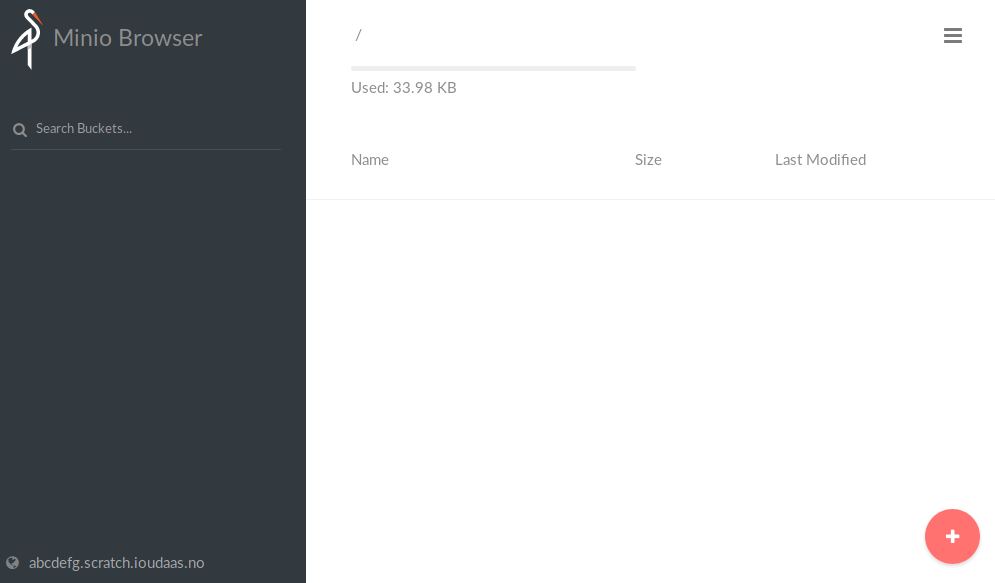
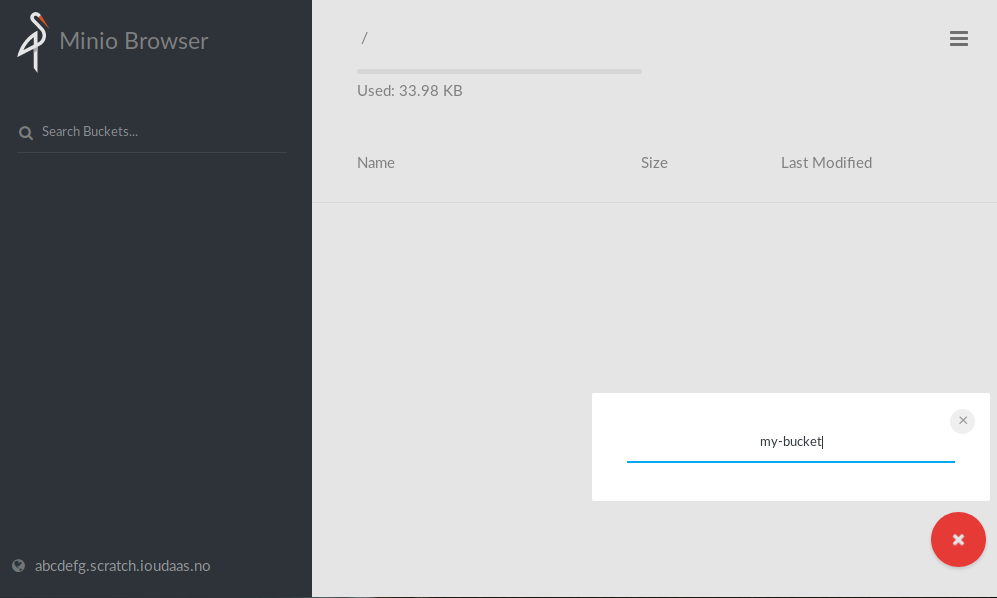
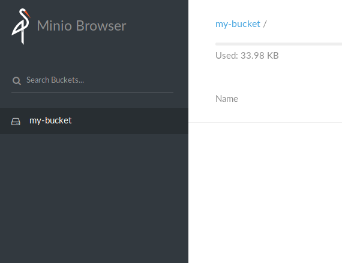
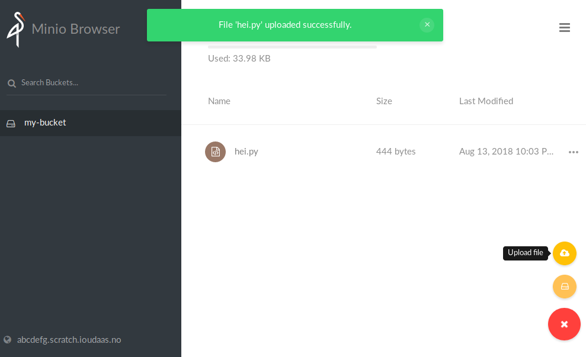

Configuration
Setting a more secure password
In order to set up a more secure password and username, go to the
Configuration section, and enter a more random secretKey and
accessKey. Keep in mind that these will be stored in plain-text and be
accessible in the application Configuration tab, so don’t reuse these
anywhere.
The accessKey and secretKey you entered can then be used when login into
minio.
Usage
Uploading files
Begin by creating a new bucket by clicking on the circle with a plus sign in
the right-hand corner, and selecting Create bucket.

You will then be prompted for a bucket name.

After giving the bucket a name and pressing enter, you will be able to access the bucket by selecting it in sidebar on the left side of the screen.

To upload a file, click the circle again, and select Upload file. You should
then be able to select which file(s) to upload. To upload multiple files, hold
shift while selecting files.
